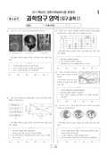

문제지

2011학년도 대학수학능력시험 · 2010년 11월 시행
2011학년도 수능 과학탐구 지구과학Ⅰ 1등급컷은 원점수 45점(추정)입니다.
원점수 1등급컷은 공식 발표값이 아니라 EBSi·입시기관 값입니다. 등급별 값은 등급컷 표, 출처 구분은 데이터 원칙에 있습니다.

시험지를 먼저 풀어 보세요. 등급컷·표준점수·난이도는 흐리게 가려 뒀어요.
| 등급 | 원점수 | 표준점수 |
|---|---|---|
| 1 | 45 | 67 |
| 2 | 41 | 64 |
| 3 | 36 | 59 |
| 4 | 29 | 53 |
| 5 | 22 | 46 |
| 6 | 16 | 41 |
| 7 | 12 | 37 |
| 8 | 9 | 34 |
등급별 컷 · 공개 원점수 추정 · 평가원 표준점수 분포로 검증 · 만점 50점
정답 변경 없음
이의신청 3문항 · 평가원 상세 답변 3문항
이의 요지
이의 신청 내용을 요약하면 열곡은 육지에만 존재하는 지형이므로 그림의 쇼의 위치인 해저에서는발달할 수 없고 따라서 <보기> ㄱ의 진위가 거짓이 되며 이 문항의 정답은 @번이 되어 정답에오류가 있다는 주장입니다.
평가원 답변
본 문항은 변동대에서 일어나는 지질학적 현상에 대한 이해를 바탕으로 태평양과 대서양의 변동대에 존재하는 해저 지형의 특징을 알고 있는지 평가하는 문항입니다.이의 신청 내용을 요약하면 열곡은 육지에만 존재하는 지형이므로 그림의 쇼의 위치인 해저에서는발달할 수 없고 따라서 <보기> ㄱ의 진위가 거짓이 되며 이 문항의 정답은 @번이 되어 정답에오류가 있다는 주장입니다.하지만 열곡은 지각이 분리되는 발산형 경계에서 생성되는 좁고 긴 계곡을 말합니다. 따라서 열곡은 육상에 위치한 동아프리카의 열곡대뿐만 아니라 해저에 위치한 대서양 중앙 해령의 중앙부에도존재합니다. 또한 고등학교 지구과학Ｌ의 모든 교과서에서 “해령의 정상부에 열곡이 발달되어 있다는 설명어나 그림이 제시되어 있습니다.따라서 이 문항은 오류가 없습니다.
스캔 원문을 글자로 옮긴 것이라 오탈자가 있을 수 있어요.
이의 요지
이의 신청 내용을 요약하면 다음과 같습니다.
평가원 답변
본 문항은 금성의 시운동과 위상변화에 대한 지구 중심설과 태양 중심설의 차이점을 이해하고있는지 평가하는 문항입니다. 이의 신청 내용을 요약하면 다음과 같습니다. <보기> ㄱ의 진술은중의적으로 해석될 수 있으며 해석 방법에 따라 정답이 달라지게 되어 문항 오류 혹은 정답 오류라는 주장입니다. 그리고 문항 혹은 정답 오류가 되는 경우를 <보기> ㄱ이 “(가)에서 태양의 공전주기와 금성이 주전원 중심을 공전하는 주기는 같다'로 읽혀지는 경우라고 말하고 있습니다.하지만 '나의 친구의 연필'이 내 연필이 아니고 친구의 것인 것처럼 '큼성의 주전원 중심의 공전주기'는 금성의 공전 주기가 아니고 주전원 중심의 공전 주기임이 명확합니다.지구의 공전 주기'를 '지구의 태양 중심의 공전 주기'라고 억지로 표현하여 <보기> ㄱ의 진술을금성의 공전 주기로 해석할 수 있다고 주장한다면 현재 <보기> ㄱ의 표현인 '금성의 주전원 중심의 공전 주기'는 '지구의 태양의 공전 주기'와 같은 표현이 되어 의미를 해석할 수 없게 됩니다.코페르니쿠스 이전의 주전원 이론은 지구 중심설에 기반하고, 문항에서 지구 중심설이라는 표현을 명시하였기 때문에 주전원 중심의 공전 주기라는 표현 자체에 지구 중심에 대한 희전이라는명확한 의미가 담겨 있습니다. 또 금성이 주전원 중심에 대하여 희전한다고 한다면 이러한 희전에대해서는 공전이라는 단어를 사용하는 것이 적절치 않습니다. 지구 중심설에서 금성은 주전원 운동을 하면서 지구를 공전한다고 표현하는 것이 맞습니다. 따라서 이 문항은 오류가 없습니다.( 과학탐구 영역, 유형(과목): 물리| )문제 및 정답 이의 신청 관련 답변 자료
스캔 원문을 글자로 옮긴 것이라 오탈자가 있을 수 있어요.
이의 요지
( 과학탐구 영역, 과목: 화학 |)문제 및 정답 이의 신청 관련 답변 자료
평가원 답변
본 문항은 운동 마찰력만 작용하는 상황에서 두 물체의 운동 방정식을 세우고, 이를 통해 운동마찰 계수를 구하도록 하는 것입니다. ㅅ가 운동하는 동안 받는 힘은 8가 &에 작용하는 마찰력)6&꾸이고 이 힘은 ㅅ의 운동 방향과 반대 방향이므로08 /41729 = 70700 19입니다.0가 받는 힘은 쇼가 에 작용하는 마찰력 /,』와 수평면이 8에 작용하는 마찰력 <,』입니다./,ㅁㅠ 의 운동 방향과 같은 방향이고 /4ㅎ는 반대 방향이므로8 7 수 /41729 - /66 (27272 )0 = 2720811 39068 641 6 219입니다[= ㆍ와 8의 처음 속도를 2라 하고, 와 가 정지할 때까지 이동한 거리가 각각 38와 28이므로,^: 2×(-/160)×36=-@~ - 식 113: 2 씨즐 -긍/610×96=-가 - 식 2입니다. 식 1과 2를 연립하여 정리하면써_ 으/6 4입니다.만일 이 문항을 일-에너지 정리를 이용하여 푼다면, ㅅ&가 38만큼 이동하는 동안 마찰력 /,,』가한 일은 쇼의 운동 에너지 감소량과 같으므로1스: 7636 = - 70040 86 = 긍200 -직3이며, 3가 28만큼 이동하는 동안 83에 작용하는 힘이 한 일은 8의 운동 에너지 감소량과 같으므로2: (07765) ×26=(-3//06+ /4 )770 ×26 =- 7207 - 식 4입니다. 식 3과 4를 연립하여 정리하면써_ 흐/6 4입니다.따라서 이 문항은 오류가 없습니다.( 과학탐구 영역, 과목: 화학 |)문제 및 정답 이의 신청 관련 답변 자료
스캔 원문을 글자로 옮긴 것이라 오탈자가 있을 수 있어요.
시험 전체 관련 보도 4건은 2011학년도 대학수학능력시험 회차 페이지에 모아 두었어요.
발행 기관: 한국교육과정평가원(KICE). 파일 위치: 이 사이트가 보관한 사본. 저작권은 발행 기관에 있습니다. 원본과 다르거나 게시 중단이 필요하면 연락처로 알려 주세요. 등급컷 출처 구분은 데이터 원칙에서 설명합니다.
막대 색은 역대 대비 난이도 · 진한 막대가 이 시험 · 막대를 누르면 그 회차로 이동
| 회차 | 1등급컷 | 표점 최고 | 1등급 표점 | 난이도 |
|---|---|---|---|---|
| 수능2011학년도이 시험 | 45 | — | 67 | 어려움 |
| 수능2010학년도 | 48 | — | 65 | 보통 |
| 수능2009학년도 | 44 | — | 67 | 어려움 |
| 수능2007학년도 | 47 | — | 64 | 쉬움 |